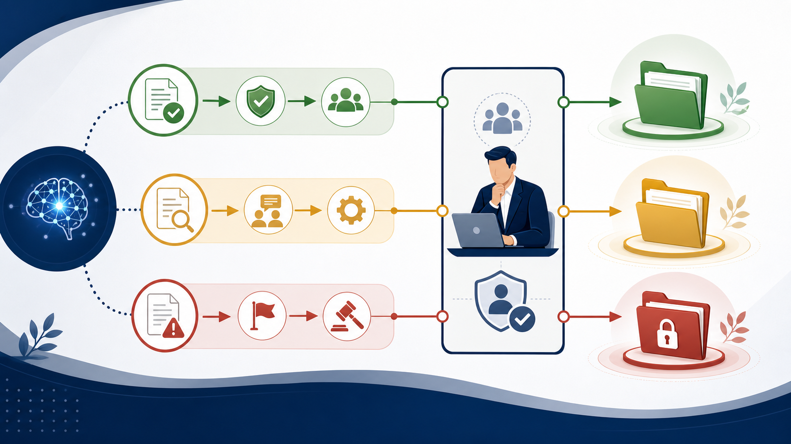

GENERATIVE AI / INTERNAL POLICY
生成AIの社内利用ルール｜社員が迷わず使える最低限の決め方
社内ルールは「AIを使ってよいか」だけでは足りません。現場が止まらないように、入力情報と出力の扱いを、短い分類表と確認フローに落とし込みます。

生成AIの社内ルールに最低限必要な6項目
ルール作りで最初から分厚い規程を作ると、社員に読まれず、現場の判断が属人化します。まずは次の6項目をA4一枚にまとめ、業務ごとの補足は後から追加します。
- 目的：文章作成、要約、検索、分析など、使ってよい用途。
- 入力情報：個人情報、顧客情報、秘密情報の分類。
- 出力確認：誤り・引用・数字・権利関係の確認者。
- 公開前承認：顧客や社外へ出す前の承認フロー。
- アカウント：会社管理のアカウント、権限、退職時の停止。
- 事故対応：誤送信や漏えいが疑われる場合の連絡先。
入力情報は「利用可・要確認・禁止」の3分類にする
「機密情報を入力しない」という書き方だけでは、社員が判断できません。自社の情報を具体例に分け、迷ったときに相談できる場所を明記します。個人情報の扱いは、サービスの利用条件や自社のプライバシー方針と照合してください。
| 分類 | 例 | 運用 |
|---|---|---|
| 利用可 | 公開済み商品情報、一般的な文章の下書き | 出力を確認して利用 |
| 要確認 | 社内資料、顧客名を伏せた案件情報、未公開企画 | 承認者とサービス条件を確認 |
| 入力禁止 | 個人情報、認証情報、契約前の秘密情報 | AIサービスへ入力しない |
この分類は固定ではありません。AI導入のリスクで整理した入力・権限・契約の論点と合わせ、業務ごとに更新します。
社員への展開は「禁止事項」より使い方の例を先に出す
ルールを公開するときは、禁止事項だけを並べないことが重要です。良い例、悪い例、迷ったときの相談先を1セットで示します。たとえば「公開済み商品情報からメール案を作る」「顧客名を伏せても案件の組み合わせで特定できる場合は要確認」といった具体例です。
1枚の分類表
社内チャットやポータルでいつでも見られる状態にする。
安全な例で試す
公開情報を使い、確認・修正まで体験する。
迷いを集める
質問をFAQに追加し、ルールを育てる。
ルールは一度作って終わりにしない
生成AIのサービス条件、社内の業務、扱うデータは変わります。最低でも、サービス追加時・重大な事故時・四半期ごとのいずれかで見直します。利用ログや相談内容を確認し、禁止を増やすだけでなく、利用可能な範囲を明確にすることが大切です。
ルール文を実際の業務フローに置く
「機密情報を入力しない」という一文だけでは、現場の判断は止まります。求人票、営業報告、議事録、問い合わせ返信など、よく使う業務ごとに、入力してよい情報、匿名化する情報、最終確認者を例示してください。
| 場面 | 入力前の判断 | 出力後の確認 |
|---|---|---|
| 求人票 | 公開済みの募集条件だけ使う | 事実・表現・条件を採用担当が確認 |
| 営業提案 | 顧客名や未公開価格を伏せる | 金額・納期・宛先を営業責任者が確認 |
| 議事録 | 会議の機密度を確認する | 決定事項・担当・期限を参加者が確認 |
ルールの改訂を運用に組み込む
生成AIのサービス条件や社内業務は変わるため、作成日だけでなく、次の見直し日と管理者を決めます。新しいサービスを追加したとき、誤送信が起きたとき、現場から同じ質問が続いたときは、分類表とFAQを更新するタイミングです。
厳しい禁止事項を増やすだけでは、社員が個人アカウントへ逃げる可能性があります。安全に使える例を増やし、迷ったときに相談しても責められない報告経路を用意することが、ルールを守られる状態へ近づけます。
A4一枚の社内ルールに入れる内容
社員が毎日読むのは、長い規程より、迷ったときに判断できる短い表です。利用目的、入力分類、出力確認、公開前承認、アカウント管理、事故時の連絡先を一枚に置き、詳しい規程や契約条件はリンクで分けます。
- 使ってよい業務と使ってはいけない業務
- 利用可・要確認・入力禁止の具体例
- 社外へ出す前の確認者
- サービス追加・退職時の権限管理
- 誤入力や誤送信を報告する窓口
ルールを研修で終わらせず、質問から更新する
社員研修では、公開情報だけを使って安全な例を試し、出力を修正してから共有する流れを体験させます。研修後に集まった「この情報は要確認か」「この回答を顧客へ送れるか」という質問を、分類表とFAQへ追加します。
ルールの目的は利用を止めることではなく、安心して使える範囲を明確にすることです。守られないルールを増やすより、現場が判断できる例を増やします。
ルールの管理者と相談先を決める
社内ルールは、作成者が異動したあとも更新される必要があります。情報管理の管理者、業務ごとの確認者、契約や個人情報を相談する担当者を分け、ページの冒頭に連絡先を置きます。
- ルールの最終承認者
- サービス追加を確認する担当者
- 社外送信の承認者
- 誤入力・誤送信の報告先
- 次回の見直し日
相談先が明記されていれば、社員は判断を抱え込まずに済みます。質問が増えた箇所は、禁止を増やす前に、具体例と安全な使い方を追加する材料にします。
- 経済産業省 AI事業者ガイドライン検討会（2026-07-12確認）
- IPA テキスト生成AIの導入・運用ガイドライン（2026-07-12確認）
- 個人情報保護委員会 生成AIサービスの利用に関する注意喚起（2026-07-12確認）
よくある質問
社員が個人アカウントでAIを使っている場合は？
一律に責めるより、会社管理のアカウント、入力禁止情報、相談先を用意します。すでに入力した情報がある場合は、サービス条件を確認し、情報管理担当へ報告できる流れを作ります。
ルールに違反した場合の罰則も必要ですか？
罰則だけを先に決めると、事故が隠れることがあります。まず報告・停止・確認の手順を整え、故意や重大な違反の扱いは既存の情報管理規程と整合させます。